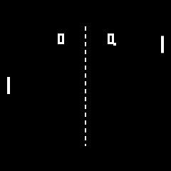
PONG1972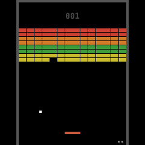
BREAKOUT1976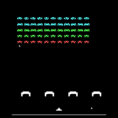
SPACE INVADERS1978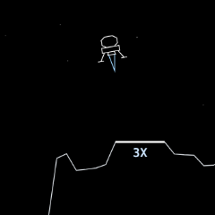
LUNAR LANDER1979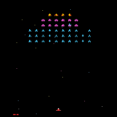
GALAXIAN1979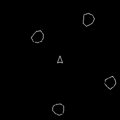
ASTEROID BELT1979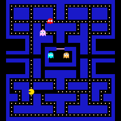
COMECOCOS1980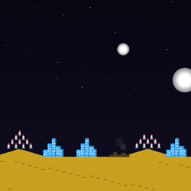
MISSILE COMMAND1980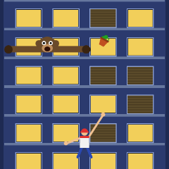
CRAZY CLIMBER1980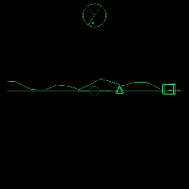
BATTLEZONE1980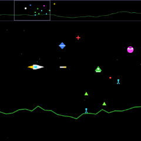
DEFENDER1980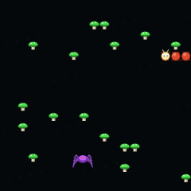
CENTIPEDE1981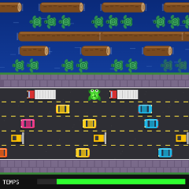
FROGGER1981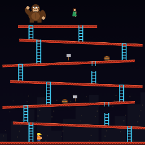
DONKEY KONG1981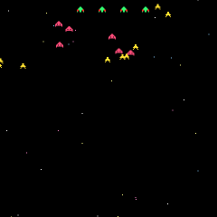
GALAGA1981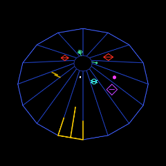
TEMPEST1981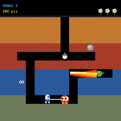
DIG DUG1982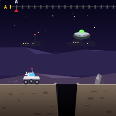
MOON PATROL1982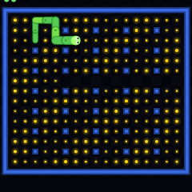
NIBBLER1982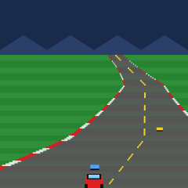
POLE POSITION1982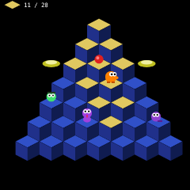
Q*BERT1982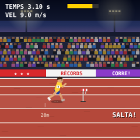
TRACK & FIELD1983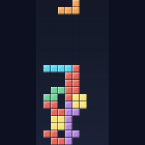
TETRIS1984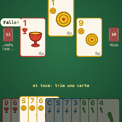
LA BOTIFARRAS. XIX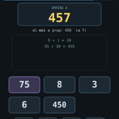
XIFRES1972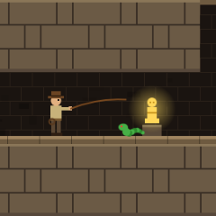
EL TEMPLE1989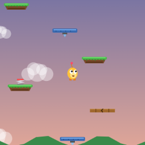
AMUNT2009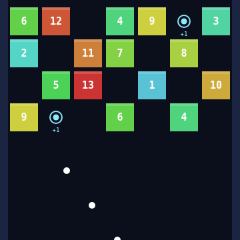
BOLES2016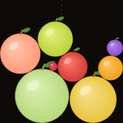
SÍNDRIA2021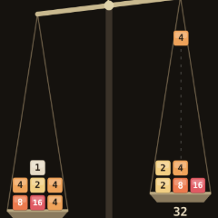
BALANÇA2026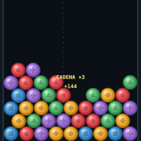
RAM2026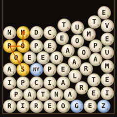
GARBUIX2026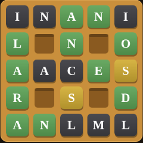
LA GOFRA2026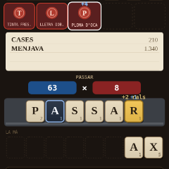
LA IMPREMTA2026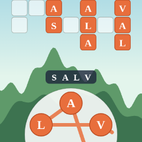
LA ROTLLANA2026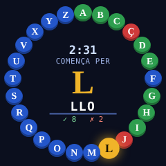
L'ABECEDARI2026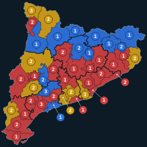
LA CONQUESTA2026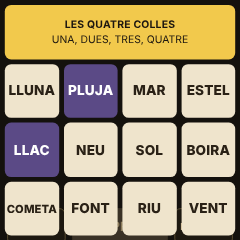
LES QUATRE COLLES2026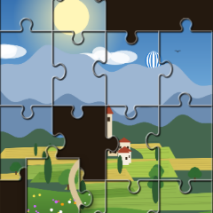
EL TRENCACLOSQUES2026